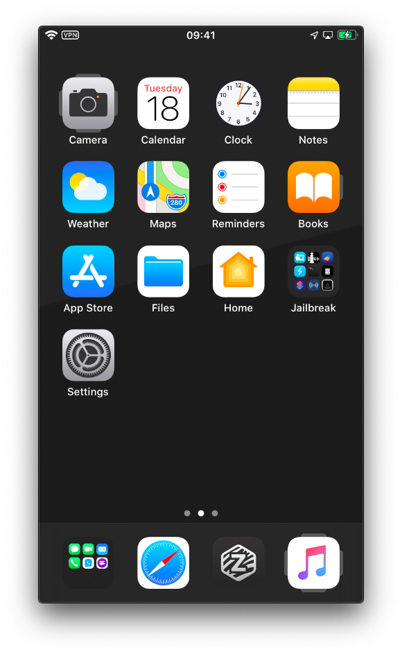
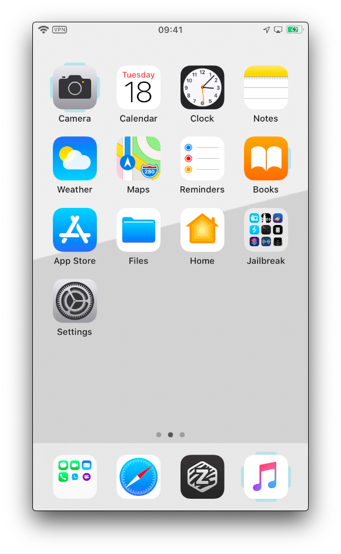
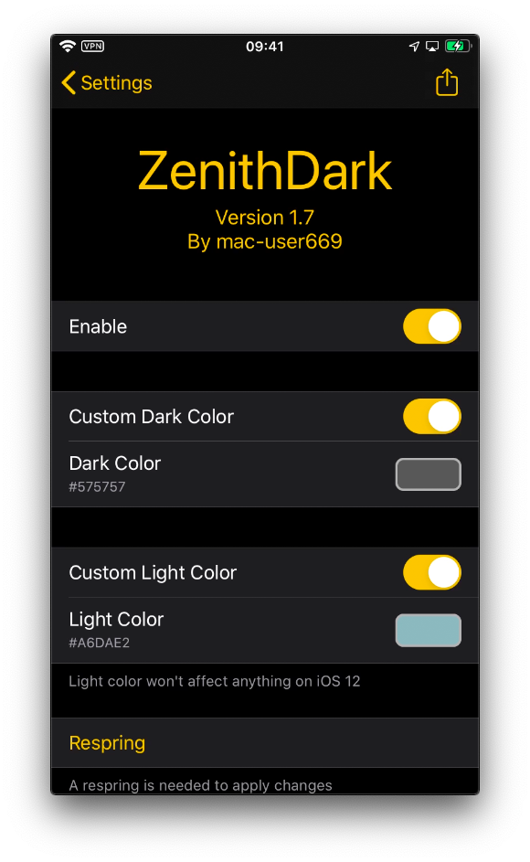

ZenithDark
Custom colored tabs for Zenith!
Change the tab color in Muirey03's Zenith. Make them blend in, or pop out!
Screenshots
  
Changelog
1.7 iOS 12 Support
1.6 Switch to libCSColorPicker.
1.5 Use libSparkColourPicker.
1.4.1 New depiction links.
1.4 New OLED and OLED Dark modes!
1.3 Use Cephei for Prefs UI/UX.
1.2 Tweaked Colors.
1.1 Added Preferences, including an Enable/Disable switch!
1.0 Full Release!
0.0.1 Initial Release!
Source Code
github.com/CobreDev/ZenithDark